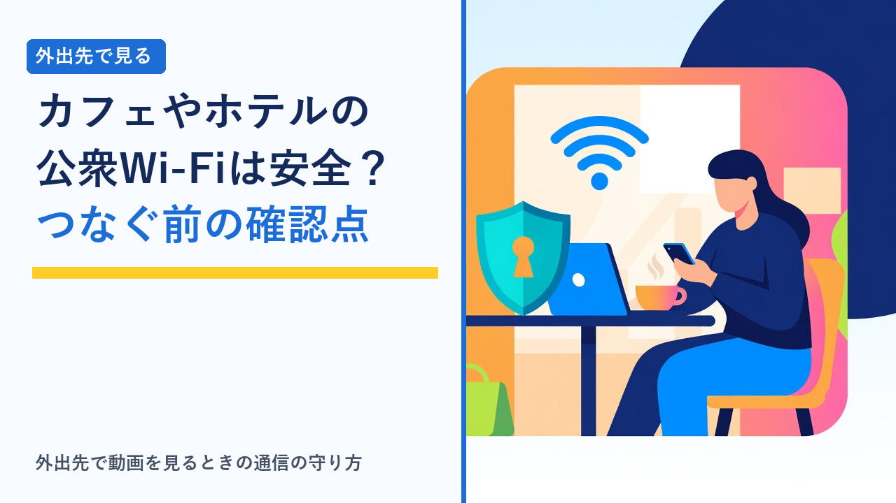
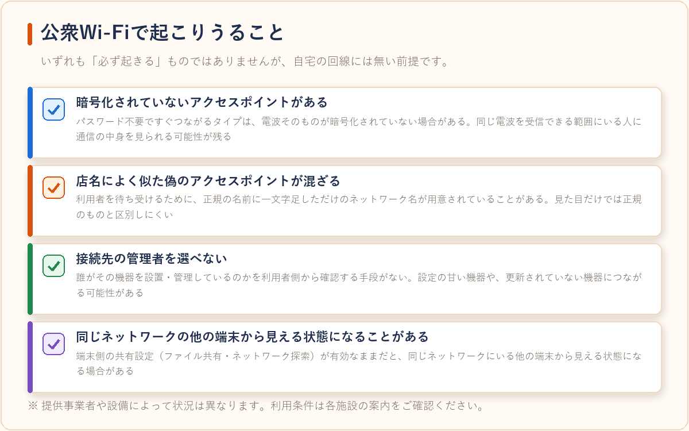
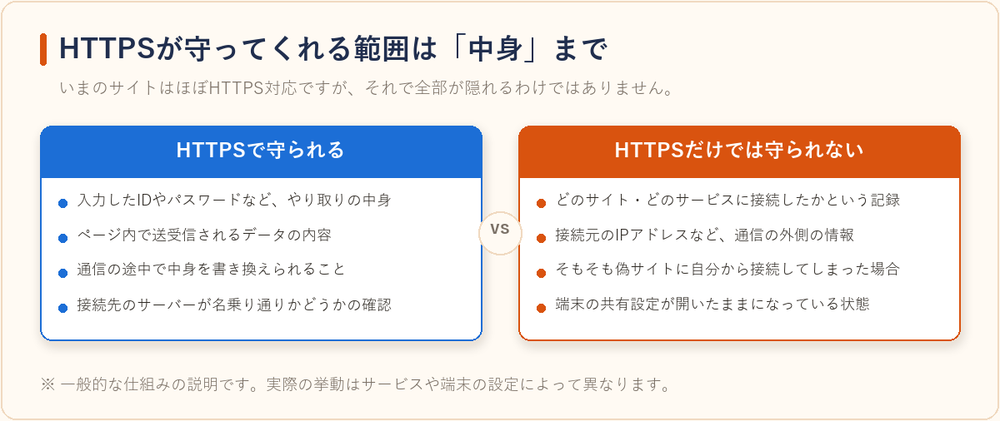
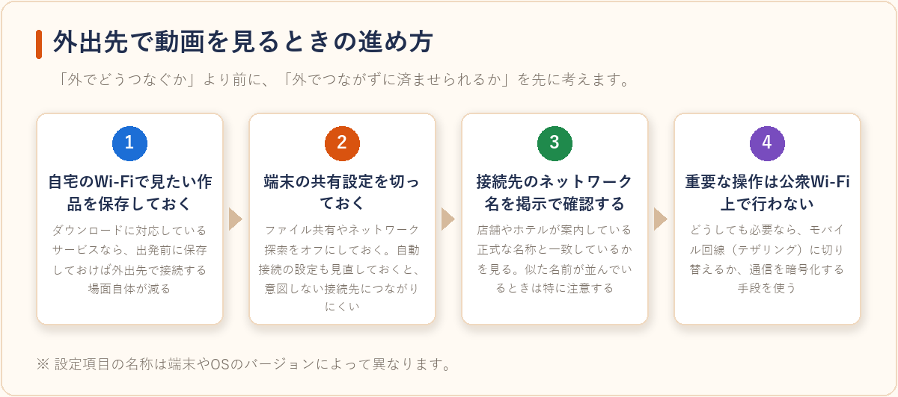
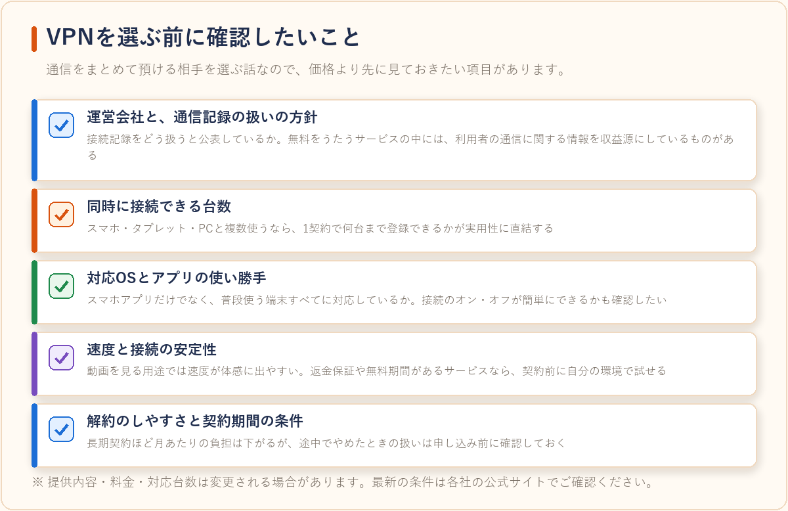

公衆Wi-Fiは安全？カフェ・ホテルで動画を見る前に知っておきたい通信の話
2026-08-25 更新

カフェやホテル、空港などで使える公衆Wi-Fiは、スマホの通信量を気にせず動画を見られる便利な仕組みです。一方で「無料のWi-Fiは危ないと聞くけれど、実際に何がどう危ないのか分からない」という声もよく聞かれます。この記事では、公衆Wi-Fiが自宅の回線と何が違うのかを整理したうえで、いまのウェブで標準になっているHTTPSがどこまで守ってくれるのか、そして外出先で動画を見るときに現実的にできる対策とVPNの位置づけを、客観的にまとめます。
公衆Wi-Fiが自宅の回線と違う点
自宅のWi-Fiは、機器を選んだのも設定したのも自分自身です。パスワードを知っているのも家族だけで、つながっている端末も把握できています。公衆Wi-Fiでは、この前提がすべて成り立ちません。設置したのも管理しているのも他人で、同じ電波を使っている人が誰なのかも分かりません。

| 比べる項目 | 自宅のWi-Fi | 公衆Wi-Fi |
|---|---|---|
| 管理しているのは誰か | 自分（機器も設定も選べる） | 施設や提供事業者。利用者からは確認しにくい |
| 同じ回線を使う人 | 家族など、把握できる範囲 | その場にいる不特定多数 |
| 電波の暗号化 | 自分で設定できる | パスワード不要で接続できるタイプは暗号化されていない場合がある |
| 接続先が本物かどうか | 自分で設定した名前なので分かる | 似た名前のネットワークが並んでいると、見分けがつきにくい |
| 通信の速度・安定性 | 契約回線に依存 | 同時に使う人数の影響を受けやすく、混雑時は落ちやすい |
特に押さえておきたいのが、ネットワーク名（SSID）は誰でも自由に付けられるという点です。店名に一文字足しただけの名前を出しておけば、それらしく見えてしまいます。掲示されている正式なネットワーク名を確認してから接続する、という基本動作が効いてくるのはこのためです。
「HTTPSだから安全」はどこまで本当か
現在のウェブサイトはほとんどがHTTPSに対応しており、ブラウザのアドレスバーには鍵マークが表示されます。これは通信の中身が暗号化されているという意味で、公衆Wi-Fiの安全性を大きく底上げしてきた仕組みです。ただし、暗号化されるのは「やり取りの中身」であって、「誰がどこに接続したか」という情報まで隠れるわけではありません。

つまり、HTTPSは「送った内容を読まれること」への対策としては有効ですが、接続先の一覧が経路上の機器に記録されることや、そもそも偽サイトに自分から接続してしまうケースまではカバーしません。加えて、端末側の共有設定が開いたままだと、暗号化とは別のところで見える状態が残ります。HTTPSは前提であって、それだけで完結する対策ではないと考えておくのが実際的です。
外出先で動画を見るときにできる対策
動画視聴に限れば、対策の順番はかなりはっきりしています。まず考えるべきは「外出先でつながずに済ませられないか」で、そのうえで、どうしても接続が必要な場面をどう扱うか、という順です。

最初のステップである「自宅で保存しておく」は、通信量の節約と安全性の両方に効く数少ない方法です。ダウンロード対応の範囲や視聴期限はサービスごとに異なるので、旅行や出張の前にまとめて保存したい場合はVODサービスの画質・ダウンロード機能を比較、オフライン視聴に強いのはどれで条件を確認しておくとよいでしょう。
それでも接続が必要なとき、通信そのものを暗号化する手段としてよく挙がるのがVPNです。カフェで作業をする機会が多い在宅ワーク中心の人にとっても、検討対象になりやすい仕組みといえます。
VPNの仕組みと、できること・できないこと
VPN（Virtual Private Network）は、端末とVPN事業者のサーバーとの間に暗号化された通り道を作り、そこを通してインターネットに接続する仕組みです。公衆Wi-Fiの経路上からは「暗号化された通信が流れている」ことしか分からなくなるため、接続先の情報などが読み取られにくくなります。
| VPNで対応できること | VPNでは対応できないこと |
|---|---|
| 公衆Wi-Fiの経路上で通信の内容や接続先を読み取られるリスクを下げる | フィッシングサイトに自分でIDやパスワードを入力してしまうケース |
| 暗号化されていないアクセスポイントを使う場面での保護を補う | 端末そのものがウイルスに感染している場合の被害 |
| 接続元のIPアドレスを接続先サイトから直接見えにくくする | SNSやサービスに自分でログインした後の行動履歴 |
| 複数端末をまとめて同じ方針で保護する（対応台数の範囲内） | アプリの権限設定や、端末の共有設定の不備 |
※ VPNを使う場合、通信はVPN事業者のサーバーを経由します。つまり「通信を預ける相手」が変わるだけとも言えます。だからこそ、事業者の運営方針を確認したうえで選ぶ必要があります。
公衆Wi-Fiに直接つなぐ場合
- 経路上の機器は、接続先の情報を把握できる状態になる
- 暗号化されていないアクセスポイントでは保護が薄くなる
- 接続先が正規のものかどうかは自分で確認するしかない
VPNを経由する場合
- 経路上からは暗号化された通信としてしか見えなくなる
- どのアクセスポイントでも同じ方針で扱える
- その代わり、VPN事業者を信頼できるかどうかが前提になる
なお、VPNには接続先の国を選べる機能を備えたサービスもありますが、動画配信サービスの視聴可能地域を回避する目的での利用は、各サービスの利用規約で禁止されているのが一般的です。本記事はあくまで、公衆Wi-Fi利用時の通信の保護という観点で取り上げています。
VPNサービスを選ぶときの確認ポイント
VPNは「速いかどうか」で比較されがちですが、通信をまとめて預ける相手を選ぶ話でもあるため、価格や速度より先に見ておきたい項目があります。

特に注意したいのが無料をうたうVPNです。サーバーの運用にも通信量にも費用がかかる以上、無料で提供するには別の収益源が必要になります。中には利用者の通信に関する情報を扱うことで成り立っているものもあり、「安全のために入れたものが、かえって情報の通り道になる」という本末転倒が起こり得ます。用途がはっきりしているなら、条件を公開している有料サービスを比較したほうが判断しやすくなります。
選び方のポイント
- まず「外でつながない」選択肢を先に検討する：自宅のWi-Fiでダウンロードしておけば、そもそも公衆Wi-Fiに接続する場面が減ります。対応状況は画質・ダウンロード機能の比較記事で確認できます。
- 端末側の設定を先に見直す：ファイル共有やネットワーク探索をオフにする、自動接続をオフにする、といった設定は無料でできて効果が分かりやすい対策です。
- 接続前にネットワーク名を掲示で確認する：似た名前が並んでいるときほど、店舗やホテルの案内と一字ずつ照合する価値があります。
- VPNは「事業者を信頼できるか」で選ぶ：速度や価格より先に、運営会社と通信記録の扱いについての方針を確認しましょう。無料サービスは収益構造も含めて慎重に見る必要があります。
- 対応台数と契約期間を確認する：スマホ・タブレット・PCと複数使うなら同時接続台数が実用性に直結します。返金保証や無料期間があるサービスなら、自分の回線環境で速度を試してから判断できます。
- 家族で使うなら人数分の使い方も想定する：VOD側の同時視聴ルールとは別枠の話になるため、動画配信サービスの家族アカウント・同時視聴ルールまとめとあわせて整理しておくと分かりやすくなります。
よくある質問
パスワードが設定されている公衆Wi-Fiなら安全ですか？
パスワードが設定されていれば、電波そのものは暗号化されている可能性が高くなります。ただし、そのパスワードは店内に掲示されていて誰でも知り得ることが多く、「同じネットワークに入れる人を限定する」効果は限定的です。パスワードの有無は判断材料の一つではありますが、それだけで安全性が保証されるわけではありません。
スマホのテザリングを使えば公衆Wi-Fiより安全ですか？
一般論としては、自分の契約回線を使うテザリングのほうが、管理者が分からないアクセスポイントに接続するより想定しやすい状態になります。ただし通信量を消費するため、動画視聴のような大きなデータのやり取りには向きません。用途によって使い分けるのが現実的です。
VPNを使うと動画の再生が遅くなりませんか？
暗号化の処理と経由するサーバーが増える分、まったく影響がないとは言えません。ただし影響の度合いはサービスやサーバーの選び方、元の回線速度によって大きく変わります。無料期間や返金保証が用意されているサービスであれば、実際に使う端末と回線で試してから判断するのが確実です。